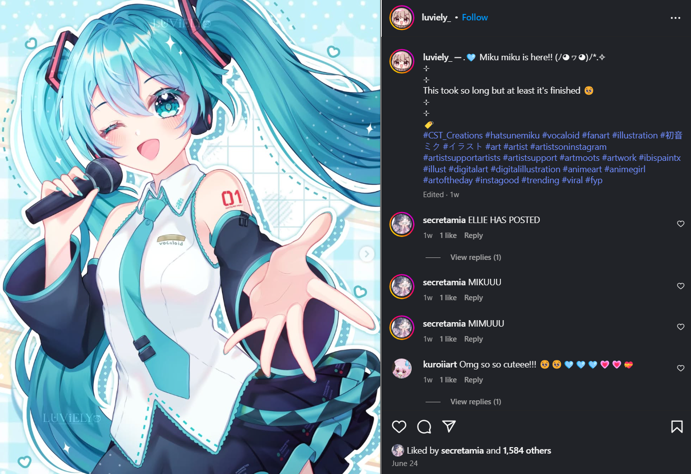

How did Vocaloid Music come about?
The first vocaloid software was created in 2004 named "VOCALOID1", developed by Yamaha Corporation
The synthesizer(VOCALOID1) was used to let users input melodies and lyrics to create songs using virtual voices
There were 3 main voicebanks introduced at this time:
- Leon and Lola (English)
- Miriam (based on a singer)
At this time, vocaloid was still rather unpopular due to robotic vocals and no engaging design of characters
A sudden burst in popularity for vocaloid came about in 2007 with the introduction of Hatsune Miku using a new engine named "VOCALOID2"

Miku was designed in an anime-style with a story and an identity which gave users not just a software but an idol that they could build stories and songs around
A Japanese platform called Nico Nico Douga allowed creators to upload and share their original song productions
Over time, viral hits began to pop up, such as:
- Melt (by ryo)
- World Is Mine(by ryo)
- Ievan Polkka
The fan culture exploded and people began to make art, music videos, remixes, fanfics and games related to Vocaloid
By this time, the vocaloid characters have expanded beyond solely Hatsune Miku to characters such as Kagamine Rin, GUMI and Megurine Luka until eventually Vocaloid has become what it is today